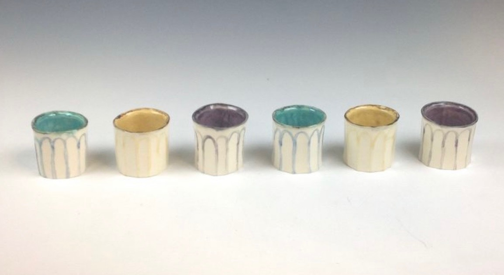
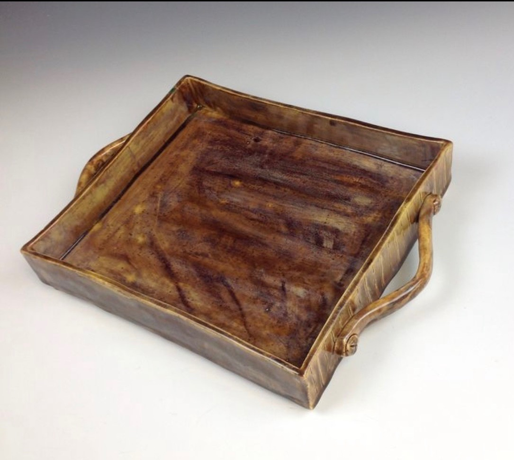
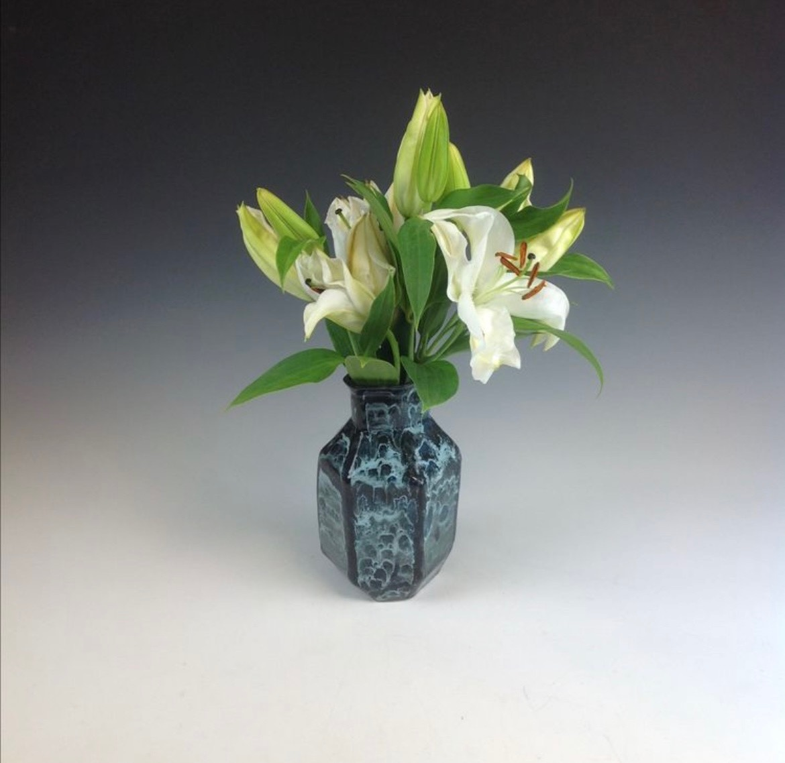
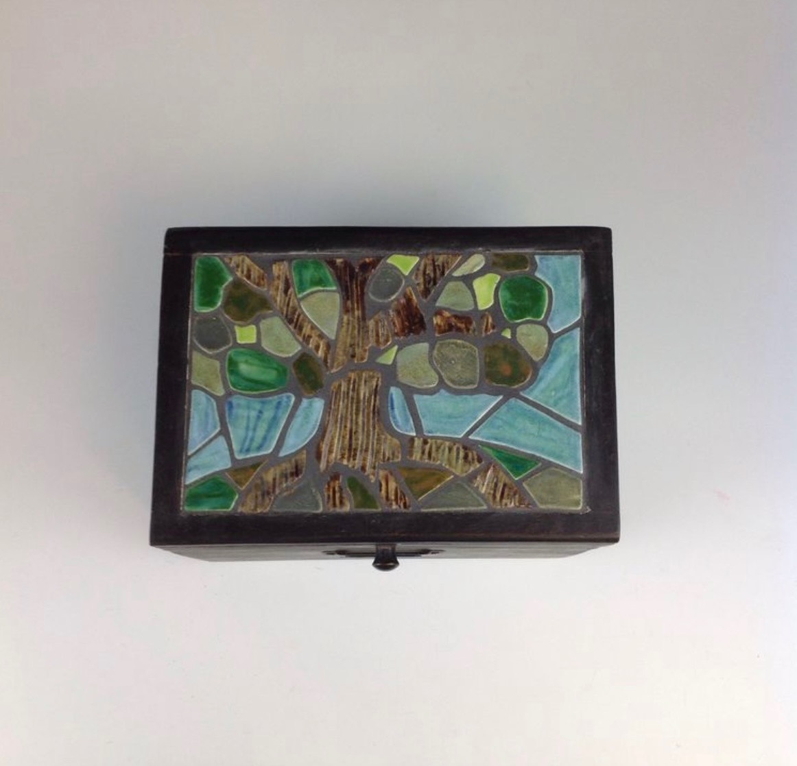

Projects
Coursework Taken So Far
- Information Professionals and Information Ethics - here is a link to a paper I wrote against banning LGBTQ+ books, and the benefits for children and adolescents to have access to them.
- Information Innovation through Design Thinking
- Foundations of Data and Information
- Users, Services, and Resources
- Leading and Managing Information Organizations
- Digital Library Technologies
- Metadata and Resource Description - here is a link to a presentation I created about VRA metadata schema.
- Public Library Service
- Resources for Young Adults - here is a link to a website I made for this class.
Coursework in Progress
- Introduction to Web Design for Information Organizations
- Academic Library Service
- Capstone Project Part 1
Hobbies
Ceramic Art
Throughout high school and college I took many ceramic art classes and have developed a passion for both hand built and wheel thrown ceramics as a hobby.
- 
- 
- 
- 
Reading
I am an avid reader, and love spending time with a book. Some of my favorite genres include fantasy, science fiction, and romance.
Crocheting
Recently, I've been teaching myself to crochet. So far I've made blankets and scarves.